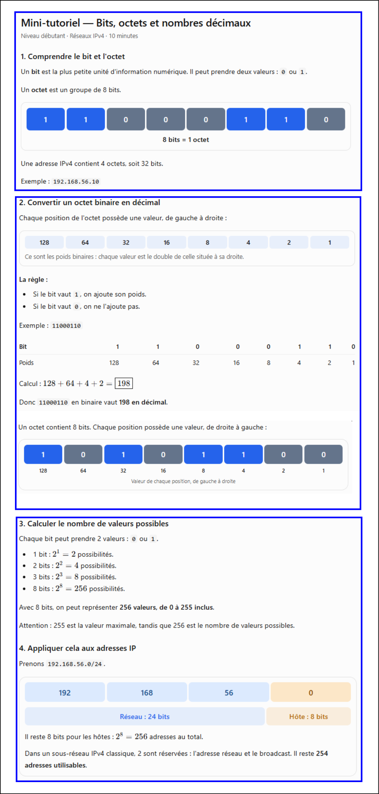
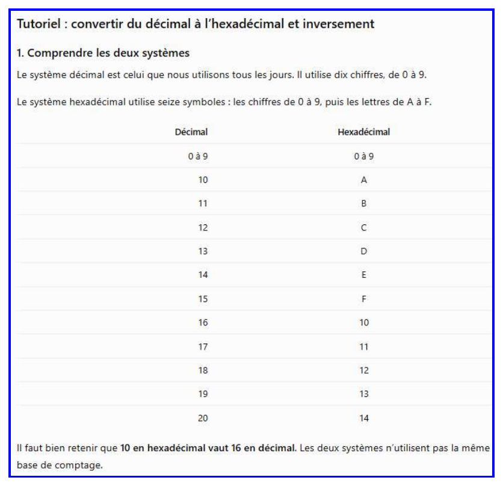
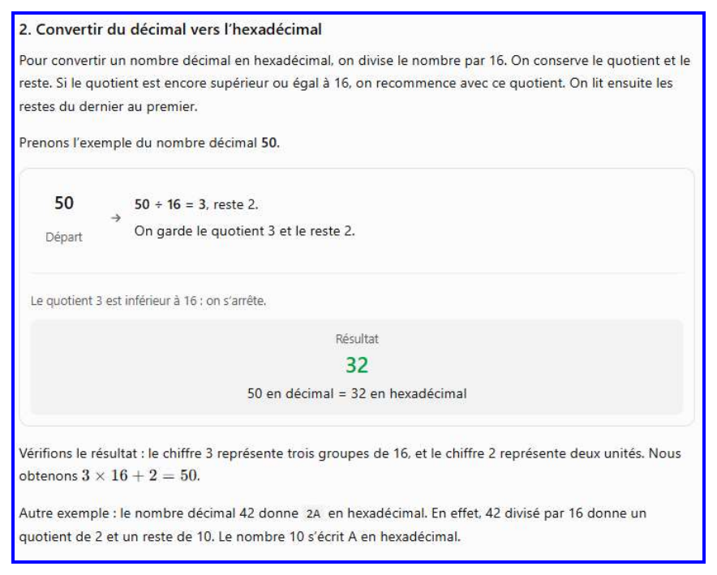
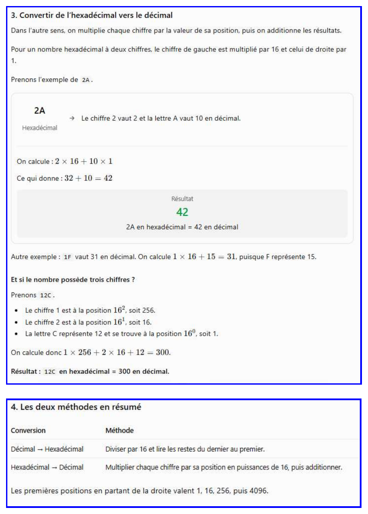
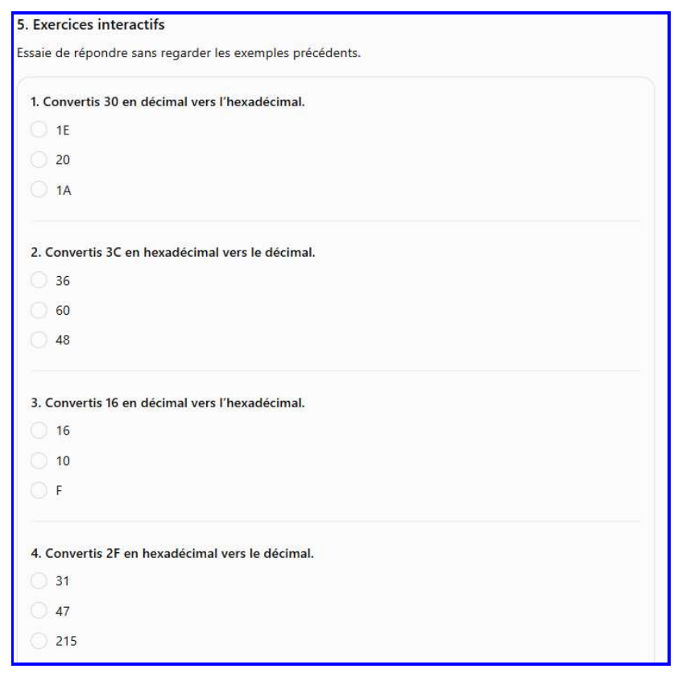
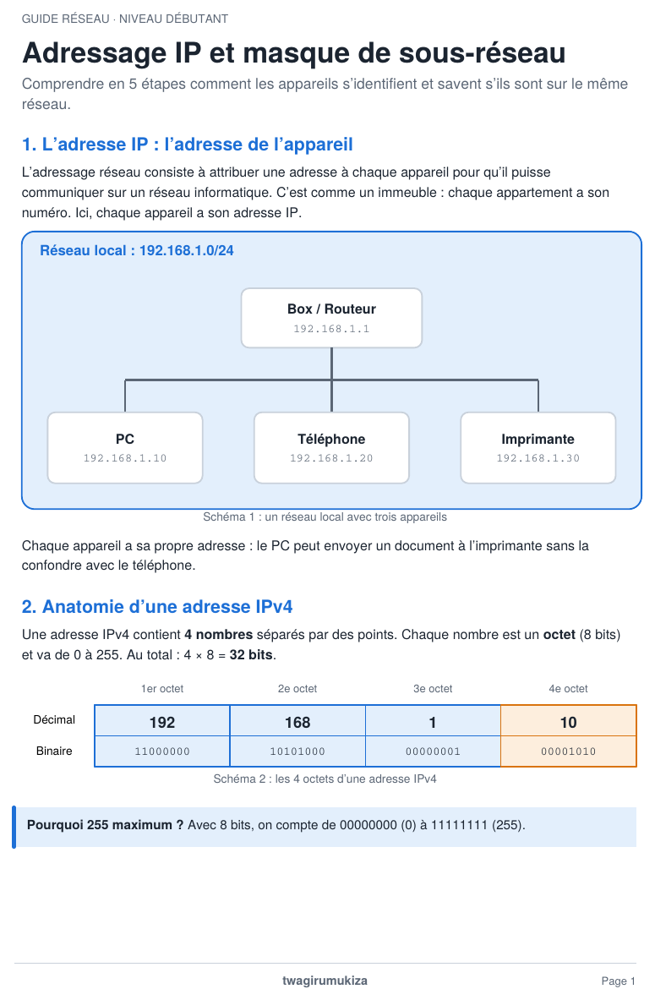
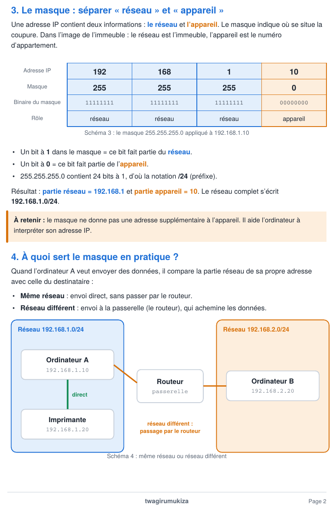
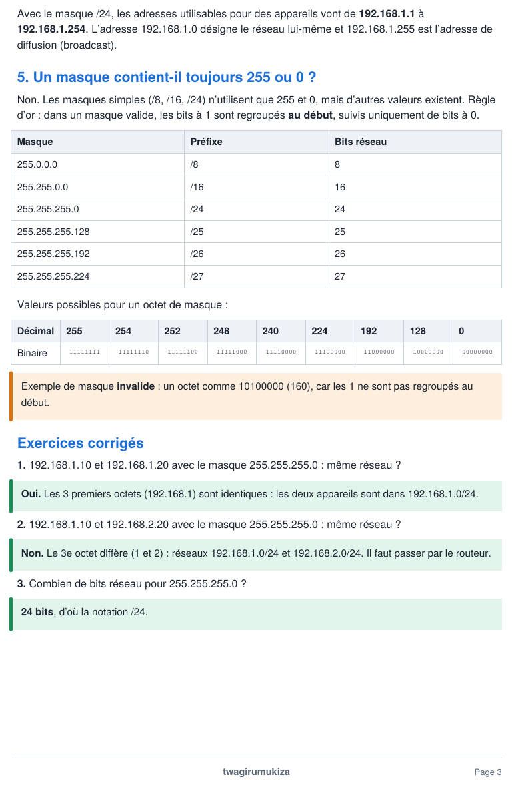
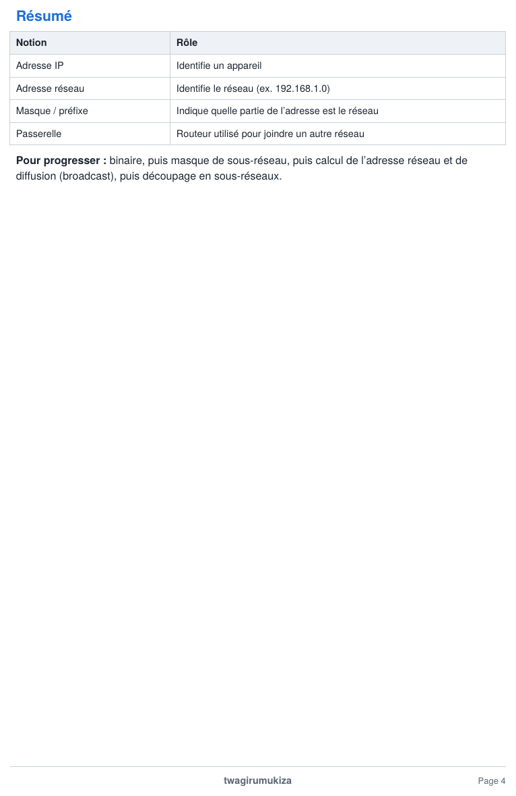

Rappels
Annexes : rappels de notions
A1. Bits, octets et nombres décimaux
Rappel pour comprendre pourquoi un octet va de 0 à 255 et comment lire une adresse IPv4 (utile dès la partie 1).
⬇ Télécharger (PDF) ⬇ Image (PNG)


A2. Convertir décimal ↔ hexadécimal
Rappel pour lire les octets bruts dans Wireshark (partie 2.6 et 2.11) : 0x54 = 84, c0 = 192.




A3. Adressage IP et masque de sous-réseau
Rappel pour comprendre 192.168.56.0/24, la diffusion et le « même réseau » (parties 1.1 et 3).



